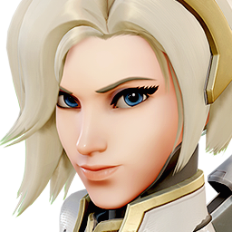
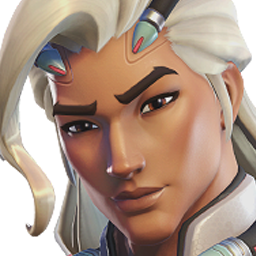
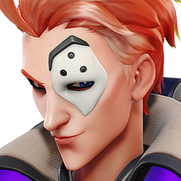
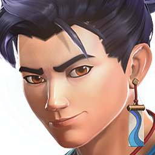

← Retour à la classification des rôles
Division : Soutien (Support)
L'Épine Dorsale de l'Escouade
Les agents de soutien sont le cœur battant de toute opération réussie. Sans eux, même la ligne de front la plus solide finit par s'effondrer sous la pression. Leur rôle tactique ne se limite cependant pas au simple ravitaillement médical : ils amplifient la force de frappe alliée, entravent les manœuvres ennemies et dictent le rythme de survie de l'équipe.
Cibler ces agents est la priorité numéro un de nos adversaires. Un agent de soutien doit donc posséder un sens aigu du positionnement et une conscience situationnelle hors norme pour survivre aux assauts des Flanqueurs ennemis.
Pour optimiser les synergies d'équipe, nos archives classifient ces agents selon trois directives principales :
Médecins (Medic)
↑ Remonter| Agent | Doctrine (Compo) | Extrait d'Archive (Histoire) | Complexité |
|---|---|---|---|
|
 Ange (Mercy) |
Poke / Dive / Brawl | Médecin de combat hors pair et ange gardien d'Overwatch, équipée d'une armure Valkyrie pour secourir les blessés. | ★☆☆☆☆ |
 Kiriko
Kiriko
|
Dive / Poke / Brawl | Spécialiste martiale de Kanezaka. Elle dirige le gang Yokai, collaborant avec Overwatch pour éradiquer l'influence criminelle du clan Hashimoto. | ★★★★☆ |
|
 Lifeweaver |
Brawl / Dive / Poke | Scientifique visionnaire ayant inventé la biolumière, fuyant Vishkar pour utiliser sa technologie dans le but de guérir le monde. | ★★★★☆ |
|
 Moira |
Dive / Brawl | Généticienne amorale maîtrisant la dégradation et la régénération cellulaire. Elle maintient son poste de lieutenant stratégique sous l'autorité de Vendetta. | ★☆☆☆☆ |
Survivants (Survivor)
↑ Remonter| Agent | Doctrine (Compo) | Extrait d'Archive (Histoire) | Complexité |
|---|---|---|---|
 Brigitte
Brigitte
|
Brawl | Ingénieure en armement et spécialiste du combat rapproché. Cette ancienne écuyère est aujourd'hui une agente protectrice indispensable au sein d'Overwatch. | ★★☆☆☆ |
 Illari
Illari
|
Poke / Brawl / Dive | Dernière des Guerriers du Soleil péruviens, portant le poids de son passé tout en maniant une puissance solaire dévastatrice. | ★★★☆☆ |
 Juno
Juno
|
Brawl / Poke / Dive | Exploratrice martienne intrépide, utilisant sa mobilité atmosphérique et son arsenal technologique pour stabiliser les signes vitaux de son escouade. | ★★★☆☆ |
 Mizuki
Mizuki
|
Brawl / Dive | Agent double infiltré chez les Yokai. Son allégeance reste incertaine en raison de la malédiction familiale orchestrée par le clan Hashimoto. | ★★★☆☆ |
|
 Wuyang |
Dive / Poke / Brawl | Combattant tactique formé par l'école de l'eau chinoise. Ce spécialiste aquatique a récemment intégré Overwatch avec sa sœur Anran. | ★★★☆☆ |
Tacticiens (Tactician)
↑ Remonter| Agent | Doctrine (Compo) | Extrait d'Archive (Histoire) | Complexité |
|---|---|---|---|
 Ana
Ana
|
Poke / Brawl | Tireuse d'élite vétéran et fondatrice d'Overwatch, soutenant son équipe à distance grâce à son fusil biotique spécialisé. | ★★★★★ |
 Baptiste
Baptiste
|
Poke / Brawl / Dive | Ancien médecin de combat de La Griffe. Cherchant l'expiation, il déploie désormais son équipement médical expérimental pour Overwatch. | ★★★★☆ |
 Jetpack Cat
Jetpack Cat
|
Dive / Poke / Brawl | Félin nommé Fyka, récupéré près de l'Observatoire. L'ingénieure Brigitte l'a équipé d'un propulseur expérimental durant ses permissions militaires. | ★★★☆☆ |
 Lúcio
Lúcio
|
Brawl / Dive | Combattant de la liberté brésilien. Il utilise des technologies soniques volées pour soutenir stratégiquement les nouvelles escouades d'Overwatch. | ★★★★☆ |
 Zenyatta
Zenyatta
|
Poke / Brawl | Moine omniaque pacifique parcourant le monde, projetant des orbes d'harmonie et de discorde pour équilibrer le cours de la bataille. | ★★★★☆ |